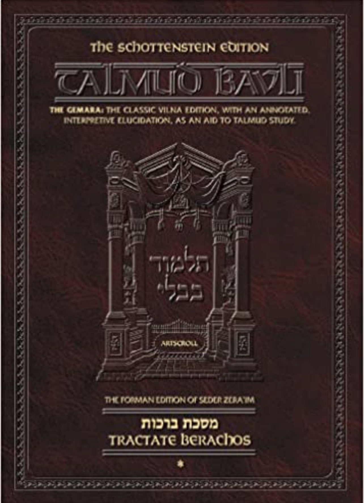
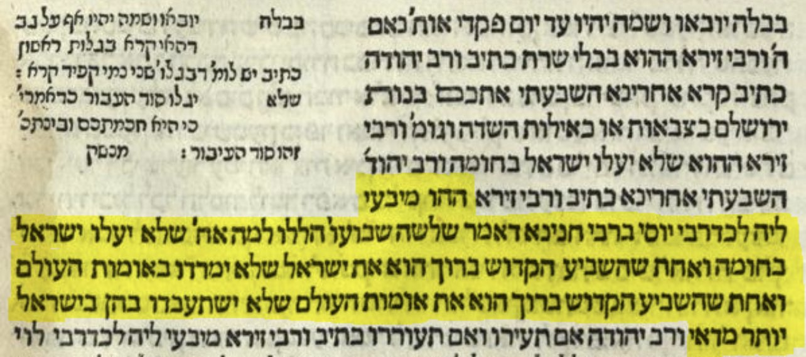
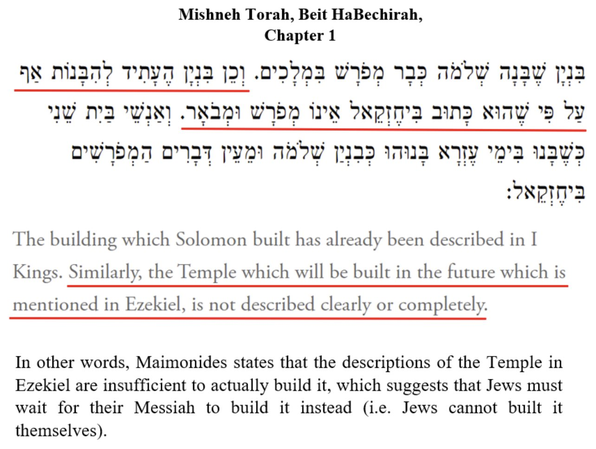
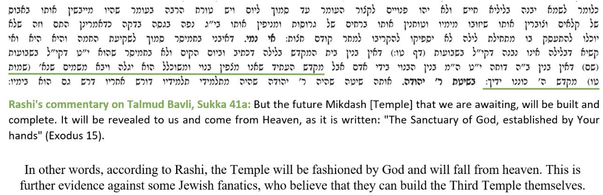

The Talmud Condemns Zionism
The basis of condemning Zionism is found in the three oaths in the Talmud that are found in Ketubot 111a, the three oaths are:
1- Jews should not forcibly, "break through the wall," and enter Eretz Yisrael en masse (basically they shouldn't do mass Aliyah ).
2- Jews should not rebel against the nations.
3- The nations of the world should not oppress Yisrael too much over the course of the exile.
We will focus on the first 2 oaths only.
''....the Jews should not ascend to Eretz Yisrael as a wall, but little by little. And another one, that the Holy One, Blessed be He, adjured the Jews that they should not rebel against the rule of the nations of the world.”


And the last one is that the Holy One, Blessed be He, adjured the nations of the world that they should not subjugate the Jews excessively.''
Source: Ketubot 111a:4
Link: https://www.sefaria.org/Ketubot.111a.4?lang=bi
Zionists nowadays are making mass Aliyah into the Eretz Yisrael which breaks the 1st oath, they also rebelled against the nations when they waged war against the Arabs so they already broke the 2 oaths that were supposed to be followed and how did this happen? Because of Zionism!
According to the Talmud Jews are not allowed to build the Third Temple

